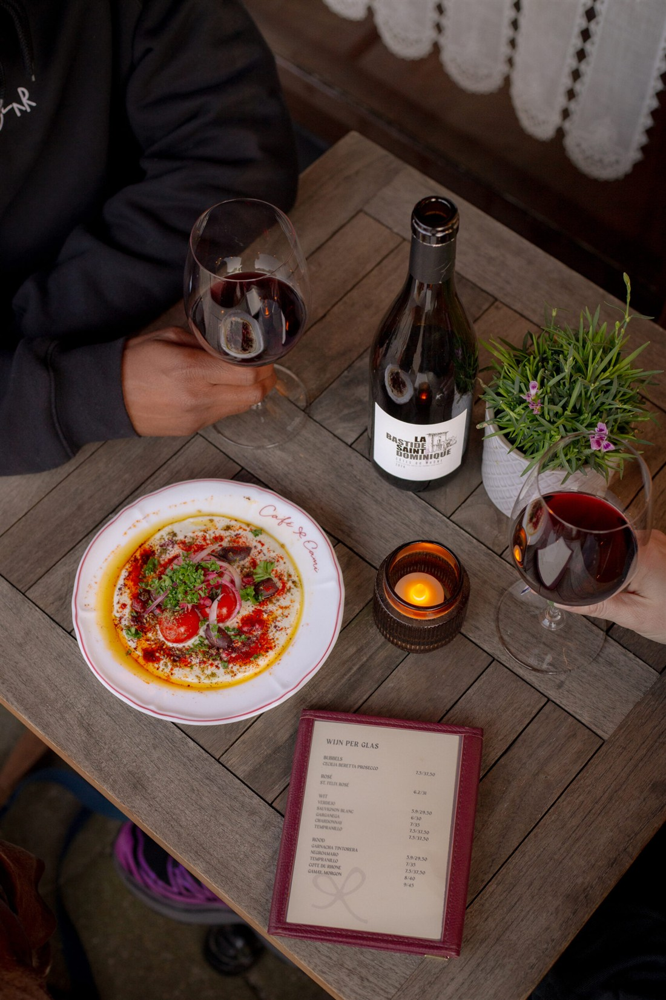

Café Cami · Laan van Meerdervoort 214, Den Haag
Een beetje thuis, een beetje anders, maar altijd welkom.
Wijn op het juiste moment bijgeschonken, smaken die vertrouwd maar verrassend zijn, en avonden die blijven hangen. Dinsdag tot en met zondag vanaf 16:00.
Een tweede thuis
Café Cami is een beetje thuis, een beetje anders, maar altijd welkom. Het is de plek waar avonden blijven hangen, waar een glas wijn altijd op het juiste moment wordt bijgeschonken en smaken vertrouwd maar verrassend zijn.
Of je nu even binnenwandelt of blijft voor een lange avond, je merkt hoe de tijd hier moeiteloos verdwijnt. Samen met vrienden, familie of jezelf. De kaarsen flakkeren zacht, het servies roept herinneringen op aan vroeger, en elke hoek draagt zijn eigen verhaal.
Een plek waar je niet naar huis wilt, waar chaos goed voelt, en elke avond iets bijzonders wordt. Een tweede thuis, waar je altijd weer terugkomt.
Tot snel!

Reserveren
Een tafel voor vanavond of later deze week? Bel of mail ons even, dan houden we een plekje voor je vrij. Even binnenwandelen mag natuurlijk ook.
Openingstijden
| Maandag | gesloten |
|---|---|
| Dinsdag | 16:00 – 23:00 |
| Woensdag | 16:00 – 23:00 |
| Donderdag | 16:00 – 00:00 |
| Vrijdag | 16:00 – 00:00 |
| Zaterdag | 16:00 – 00:00 |
| Zondag | 16:00 – 23:00 |
Je vindt ons hier
Café CamiLaan van Meerdervoort 214
2517 BK Den Haag
Voor een voorproefje van de sfeer en een kijkje achter de schermen: volg ons op Instagram. Daar delen we de momenten die Café Cami maken, van gezellige avonden tot de verhalen die je alleen hier vindt.